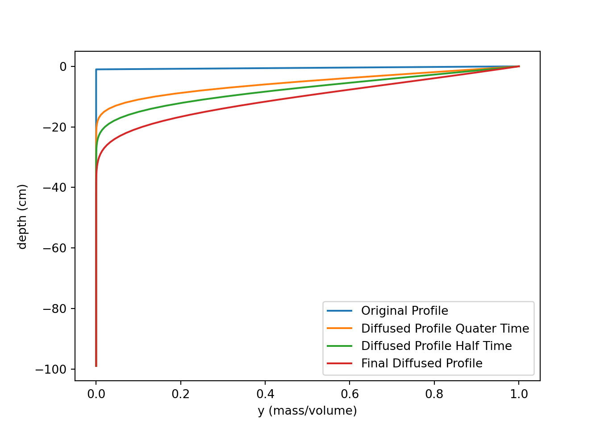

Section 8 Numerical Models
8.1 Transition / Justification
Conceptual models alone are valuable for describing a number of processes. However, quantitative, numerical models are a more powerful tool for answering questions and making predictions, and are can be informed by conceptual ones…
Relevant to aquatic and terrestrial environments.
8.2 Examples of numerical model application
Tracers to estimate organism bioturbation rate, OSL for soil age.
8.3 Characteristics of Numerical models
8.3.1 Depth dependence
Most bioturbation models consider the observation made by scientists as far back as Charles Darwin that organism activity declines with depth (Darwin, 1881) [citations]. Intuitively, greater soil depths are not as attractive to soil fauna because of increased soil density and a diminishing food supply (citation). However, a degree of nuance is needed to understand when this observation is relevant to modeling. Depth dependence is relevant under the following conditions. 1) Organism activity does not encompass the entire profile. 2) The system is not in equilibrium, or too little time has passed for bioturbation to homogenize the soil profile. 3) The rate of mixing is large compared to soil erosion or production. 4) Material that is introduced to the profile decays, weathers, or is otherwise transformed at a rate neither too fast to be meaningfully redistributed by fauna nor to slow to reach equilibrium. If one or multiple of these conditions are met, a diffusion-depth function is needed. [are examples needed to illustrate this?] Boudreau (1986a) provides equations for when these conditions are met for specific radioisotope tracers.
When depth dependence is relevant, a function that describes the diffusion-depth relationship is derived. Most often, it is found by statistically fitting a function to quartz grain age or isotope tracers from samples taken at several depth increments (Gray et al., 2020; Jarvis et al. 2010; Johnson et al., 2014; Matisoff et al., 2011) [there are more studies to included here, one that I cannot find]. There is as general consensus among these studies that diffusion depth-dependence is ubiquitous across environments and is generally best described by an exponential function. Notably, however, the shape of the functions described by these authors varies [Table X], which challenges attempts to broaden model application.
[I need to look into this further and compare the diffusion-depth functions. also, are there other ways of estimating diffusion depth? is there a way to create a general form? what is the biggest limitation: it is maximum depth or shape? this is notwithstanding any non-local diffusion.]
| Source | Equation | Intercept |
| Gray et al. (2020) | ||
| Jarvis et al. (2010) | ||
| Johnson et al. (2014) | ||
| Matisoff et al. (2011) |
8.3.2 Anomalous and Normal mixing
There are two broad approaches to modeling bioturbation in terrestrial and aquatic environments: anomalous mixing and normal mixing. Anomalous mixing models simulate the trajectory of individual sediment particles by capturing their discontinuous movement in “jumps” between periods of waiting (Michel et al., 2022). Jump length and waiting time, both organism-specific stochastic variables, are modeled to simulate mixing over short periods of time (Meysman et al., 2010 in Michel et al., 2022). Normal mixing is analogous with the diffusion process and is described by a diffusion-advection equation. Of interest to this review, if simulation time and jump counts are sufficiently large, anomalous mixing models coincide with the diffusive model (Michel et al., 2022) [further reading needed]. Further, the mathematics overlap, and the biodiffusion coefficient can be described as… [a function of jump length]. As soil development occurs over relativity long periods is the focus of this review, normal mixing is the primary approach explored here.
[Sources to further look into]
8.3.3 Local diffusion and Non-local mixing
Normal mixing is further described as the sum of two components: local and non-local mixing, each of which can be modeled. To illustrate the difference, imagine burying a marble at the bottom of a bucket of sand. To get the marble out, you have two options. Digging sand out and piling it up on the side is comparable to non-local mixing. Forcing your hand through the loosely packed sand, displacing it as you go, is similar to local mixing.
Formally, local mixing is the random displacement of material across distances over which the change in soil composition is minimal (Boudreau, 1986a). Because translocation distance is small and randomly determined, local mixing is approximately described by a diffusion-advection equation. Correspondingly, when soil is mixed, soil components will move diffusely across concentration gradients. Local mixing is common for most bioturbators and includes ingestion/egestion, pushing/shouldering of particles, and local digging/foraging… [citation to break these down]. Epi-, endo-, and epiendogeic earthworm species are all local mixers. More examples…
Non-local mixing represents the displacement of material in which the point of excavation is far from the point of deposition. Its characterized by translocation of excavated material to the soil surface followed by infilling from local material [???].
[Boudreau (1986a) suggests non-local mixing cannot be defined by diffusion. Keep reading.]
Non-local mixing is common for mound building and burrowing organisms like Anecic earthworm species and pocket gophers.
Both local and non-local mixing represent a substantial movement of material but differ in scale. Local mixing acts on a horizon to horizon scale. Non-local mixing acts on a profile scale. Given enough time and stability, either may completely ‘turn over’ the profile. Jarvis et al. (2010) found that models excluding non-local mixing significantly underestimate surface burial. Matisoff et al. (2011) also integrate a non-local mixing factor into their model.
8.4 Review of equations from the literature
A variety of equations, with varying complexities, are used to describe biotubation. Most basically, it is descried be a simple diffusion equation:
\[ \frac{dy}{dt} = \frac{d}{dz}(D(z)\frac{dyρ}{dz}) \]
Where y is the concentration (mass/volume) of some component, ρ is bulk density, and D(z) is a biodiffusion function that defines the diffusion-depth relationship. D(z) may be linear, exponential, or constant. Although, as noted above, there is general consensus that this relationship is exponential. Johnson et al. (2014) applies the following two definitions of D(z):
\[ D(z) = D(0)e^{-z/z_{b}} \]
\[ D(z)=-az+D(0) \]
where zb is the e-folding length scale (0.28 here) and a is the gradient of the slope (including where diffusion is constant w/ depth, a = 0).
This code uses the above the equations to simulate the movement of a theoretical one-time surface applied tracer by biodiffusion, local mixing, only.
# import packages
import matplotlib.pyplot as plt
import numpy as np
################ local mixing with numpy ################
# build structures for data inputs
dz = 1 # cm
z = np.arange(0, 100, dz, dtype=float) # create an array of depths
y = np.zeros(z.shape, dtype=float) # create a blank array for y, copies shape of z
p = np.zeros(z.shape, dtype=float)# create a blank array for p, copies shape of z
# establish biodiffusion function
b = 0.01 # diffusion intercept
D = b * np.exp(-z/100/0.28)
# [set] initial y values
y[z == 0] += 1 # mass/volume
# [set] initial p values
p += 1 # mass/volume
# [set] total time
total_time = 10000 # years
# more variables
dt = 0.2 * dz * dz / b # sets time step size, based on Courant–Friedrichs–Lewy condition
time_steps = int(total_time / dt) # calculates total number of time steps
y_orig = y.copy() # creates a copy of the z list for use in the for loop
y_ts2 = y.copy()
y_ts4 = y.copy()
# in order, the for statement will:
# calculate the gradient of y over z, multiplies by D to get linear flux
# caclulate the change in y flux over z. this is the net flux for each point
# adds the net flux from y at each z EXCEPT the first and last positions
# create some extra arrays for plotting through if statment
for i in range(time_steps):
qy = -1 * D[0:-1] * np.diff(y * p) / dz
dydt = -np.diff(qy) / dz
y[1:-1] += dydt * dt
if i == (time_steps / 4):
y_ts4[1:-1] = y[1:-1]
elif i == (time_steps / 2):
y_ts2[1:-1] = y[1:-1]
# plotting at a few timesteps
plt.clf()
plt.plot(y_orig, -z, label = "Original Profile")
plt.plot(y_ts4, -z, label = "Diffused Profile Quater Time")
plt.plot(y_ts2, -z, label = "Diffused Profile Half Time")
plt.plot(y, -z, label = "Final Diffused Profile")
plt.xlabel('y (mass/volume)')
plt.ylabel('depth (cm)')
plt.legend()
plt.show()
This model is a significant oversimplifcation of a soil-system, however. Surface erosion and depoistion can be relativley easilty introduced. is a
Johnson et al. (2014) integrates an erosion factor into this equation.“The erosion formulation acts by advecting the age profiles up towards the profile surface at a rate T, effectively removing the surface layers (Kirkby, 1985). Thus, Equation (2) becomes” ([Johnson et al., 2014, p. 1192])
Jarvis et al. (2010) and Matisoff et al. (2011) apply similar equations derived in Boudreau (1986) in using radioisotope tracers.
\[ \frac{dρy}{dt}=\frac{d}{dz}(D(z\frac{dρy}{dx})-wρC) \]
Where w is rate of downward soil displacement or soil velocity (m/s), which can be constant or a function of depth. This function has the advantage of integrating depth-dependent soil bulk density (ρ).
8.5 References
Boudreau, B. P. “Mathematics of Tracer Mixing in Sediments; I, Spatially-Dependent, Diffusive Mixing.” American Journal of Science 286, no. 3 (March 1, 1986): 161–98. https://doi.org/10.2475/ajs.286.3.161.
Boudreau, B. P. “Mathematics of Tracer Mixing in Sediments; II, Nonlocal Mixing and Biological Conveyor-Belt Phenomena.” American Journal of Science 286, no. 3 (March 1, 1986): 199–238. https://doi.org/10.2475/ajs.286.3.199.
Boudreau, B. P., and D. M. Imboden. “Mathematics of Tracer Mixing in Sediments; III, The Theory of Nonlocal Mixing within Sediments.” American Journal of Science 287, no. 7 (September 1, 1987): 693–719. https://doi.org/10.2475/ajs.287.7.693.
Gray, Harrison J., Amanda Keen-Zebert, David J. Furbish, Gregory E. Tucker, and Shannon A. Mahan. “Depth-Dependent Soil Mixing Persists across Climate Zones.” Proceedings of the National Academy of Sciences 117, no. 16 (April 21, 2020): 8750–56. https://doi.org/10.1073/pnas.1914140117.
Jarvis, N. J., Taylor, A., Larsbo, M., Etana, A., & Rosén, K. (2010). Modelling the effects of bioturbation on the re-distribution of 137Cs in an undisturbed grassland soil. European Journal of Soil Science, 61(1), 24–34. https://doi.org/10.1111/j.1365-2389.2009.01209.x
Johnson, D. L., Domier, J. E. J., & Johnson, D. N. (2005a). Animating the biodynamics of soil thickness using process vector analysis: A dynamic denudation approach to soil formation. Geomorphology, 67(1–2), 23–46. https://doi.org/10.1016/j.geomorph.2004.08.014
Johnson, D. L., Domier, J. E. J., & Johnson, D. N. (2005b). Reflections on the Nature of Soil and Its Biomantle. Annals of the Association of American Geographers, 95(1), 11–31. https://doi.org/10.1111/j.1467-8306.2005.00448.x
Johnson, M. O., Mudd, S. M., Pillans, B., Spooner, N. A., Keith Fifield, L., Kirkby, M. J., & Gloor, M. (2014). Quantifying the rate and depth dependence of bioturbation based on optically‐stimulated luminescence (OSL) dates and meteoric 10 Be. Earth Surface Processes and Landforms, 39(9), 1188–1196. https://doi.org/10.1002/esp.3520
Matisoff, G., Ketterer, M. E., Rosén, K., Mietelski, J. W., Vitko, L. F., Persson, H., & Lokas, E. (2011). Downward migration of Chernobyl-derived radionuclides in soils in Poland and Sweden. Applied Geochemistry, 26(1), 105–115. https://doi.org/10.1016/j.apgeochem.2010.11.007
Michel, E., Néel, M.-C., Capowiez, Y., Sammartino, S., Lafolie, F., Renault, P., & Pelosi, C. (2022). Making Waves: Modeling bioturbation in soils – are we burrowing in the right direction? Water Research, 216, 118342. https://doi.org/10.1016/j.watres.2022.118342
Román‐Sánchez, A., Laguna, A., Reimann, T., Giráldez, J. V., Peña, A., & Vanwalleghem, T. (2019). Bioturbation and erosion rates along the soil‐hillslope conveyor belt, part 2: Quantification using an analytical solution of the diffusion–advection equation. Earth Surface Processes and Landforms, 44(10), 2066–2080. https://doi.org/10.1002/esp.4626
Salvador-Blanes, S., Minasny, B., & McBratney, A. B. (2007). Modelling long-term in situ soil profile evolution: Application to the genesis of soil profiles containing stone layers. European Journal of Soil Science, 58(6), 1535–1548. https://doi.org/10.1111/j.1365-2389.2007.00961.x